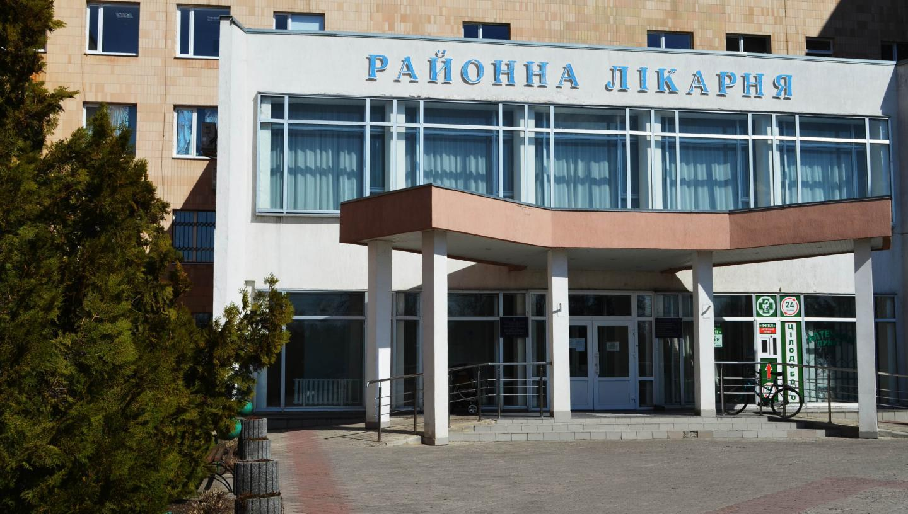

Черкаська Центральна Районна Лікарня
Найсучасніше медичне обладнання, досвідчені спеціалісти, серед яких 87 лікарів та 248 осіб середнього медичного персоналу. В стаціонарних відділеннях одночасно може пролікуватися 280 хворих, у 2003 році введено в дію ще одне відділення на 25 ліжок-місць. Лікарня має 7 рентген-кабінетів, 2 установки УЗД, 9 лабораторних та 10 фізіотерапевтичних кабінетів. Тут також розміщений пологовій будинок.
У лікарні функціонує більше 36 відділень: реанімації та інтенсивної терапії, гінекологічне відділення, пологове, хірургічне, неврологічне, інфекційне, дитяче, терапевтичне, приймальне відділення та поліклініка. Пріоритетним напрямком розвитку закладу є надання допомоги вагітним та породіллям, лікування дітей та надання кваліфікованої, якісної медичної допомоги населенню.